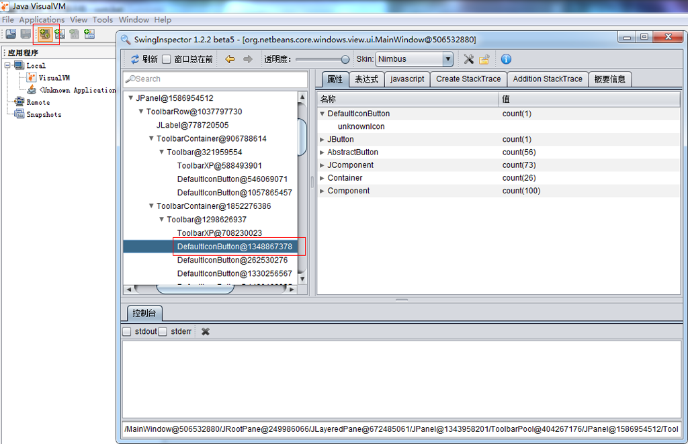
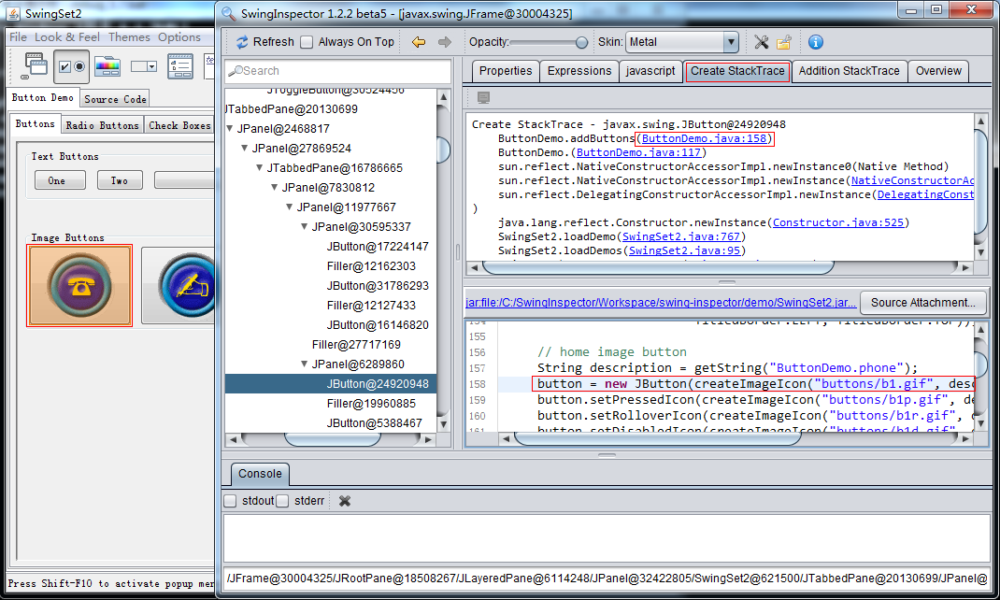
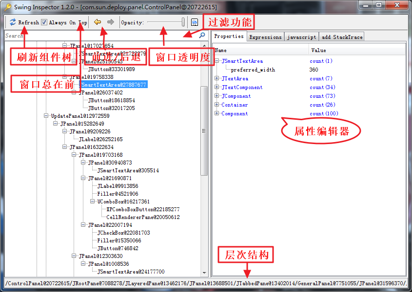
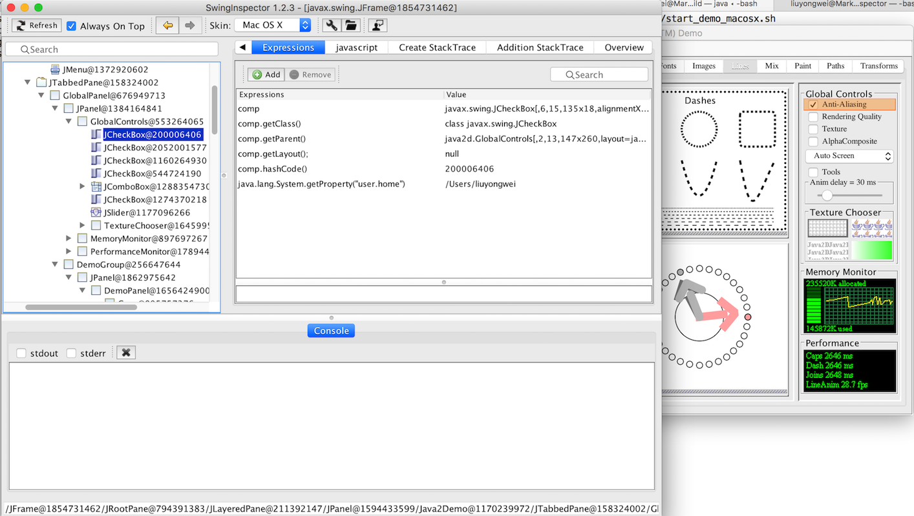
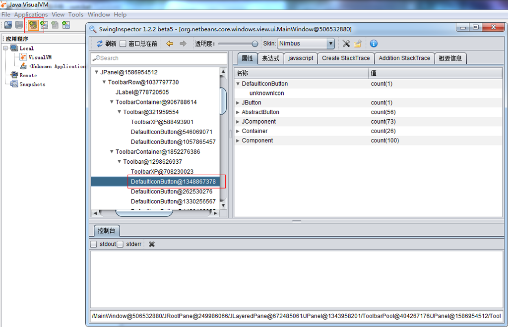
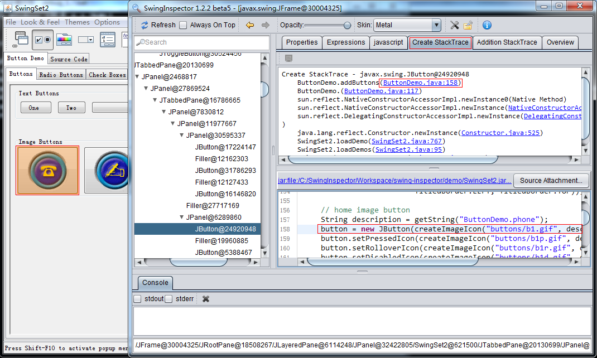
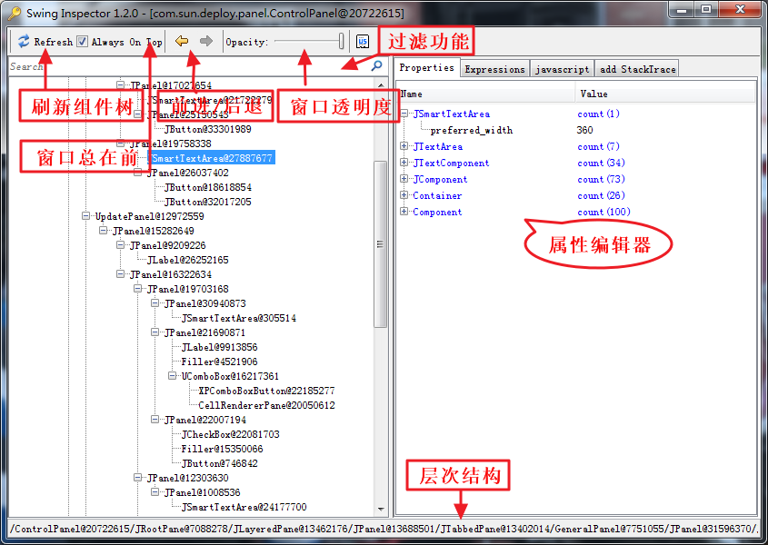
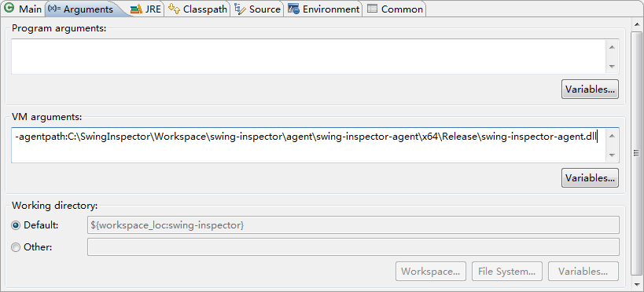
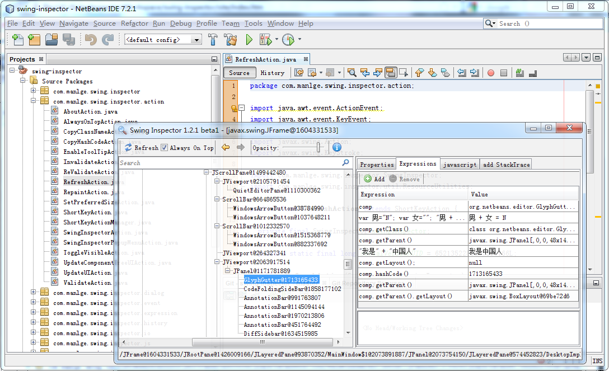

1. 快速定位界面元素(Ctrl+鼠标移动)
2. 实时修改组件属性(目前版本支持简单属性，如：字符，数字，boolean)

3. 修改组件首选大小

4. 强大的表达式支持，可以在计算结果修改对应组件的属性

5. 强大javascript支持，实时操作界面元素

6. Component对象创建记录和代码定位功能

7. 界面组装信息记录功能(想知道组件是什么时候添加到parent的吗？那就看看Add StackTrace吧)

8. 其他功能

SwingInspector 1.2.3 for Mac OSX/Windows/Linux，兼容Java 1.6到1.8
SwingInspector是一个Java Swing/AWT用户界面分析和调试工具，功能与firebug类似，具有强大的Swing/AWT用户界面分析和调试相关功能。 适用于从java swing初级到高级的所有开发人员。能够快速定位问题、UI快速调试及级分析基于Java Swing/AWT技术的软件界面的实现原理。能够给开发工作效率带来大幅提升。工具特点
下载
- 具备UI组件联动功能，在用户界面中Ctrl+移动鼠标(Mac OSX ⌘+F12)，可以在SwingInspector主界面中显示对应组件信息，并高亮当前Component。
- 可以在SwingInspector组件树中联动到用户界面，即双向联动，且不需要提供界面的源代码。
- Applet支持，可以定位嵌入到任何网页中的applet界面。
- 强大的window捕获功能，可以捕获加载agent的jvm创建的所有Swing/AWT窗口(网页中的applet，浏览器加载applet/webstart后启动的console窗口)，模式对话框等。
- 绿色，无需安装，只需给java命令添加一行参数，即可启动SwingInspector。
- 支持所有的AWT/Swing程序，netbeans、visualvm等。
- 强大的表达式支持，允许对选定组进执行表达式运算，实时显示计算结果，运算结果支持属性浏览和编辑。
- 强大的Javascript支持功能，支持用javascript实时修改用户界面中的组件，执行脚本后立即生效。
- Component对象创建记录功能，支持跟踪对象创建过程，并直接定位到代码行。
- 界面组装记录功能，支持跟踪用户界面组装过程，并直接定位到代码行。
- 高性能，核心功能采用c/c++实现，直接操纵jvm，对性能影响很小，主界面采用lazy机制，刷新组件时只更新可见viewer。属性编辑器可直接修改选定的组件属性，且直接生效。
- 可以记录组件添加到parent时的stacktrace，可以快速定位到相应的代码行。
- 简单易用，快捷键与常用软件一致(F5刷新、Alt+Left后退，Alt+Right前进等)，界面非常简洁、直观，没有学习成本。
Windows: http://www.swinginspector.com/download/swing-inspector-windows-1.2.3.zip
Mac OSX: http://www.swinginspector.com/download/swing-inspector-macosx-1.2.3.dmg
Linux: http://www.swinginspector.com/download/swing-inspector-linux-1.2.3.tar.gz
License
SwingInspector完全免费，但禁止任何商业行为，没有经过我们同意，禁止以任何形式出售本软件。禁止将本软件捆绑到公司产品中进行销售，否则将追究法律责任。
SwingInspector组成
截图

主要功能如下：
环境要求1. 快速定位界面元素(Ctrl+鼠标移动)
2. 实时修改组件属性(目前版本支持简单属性，如：字符，数字，boolean)
3. 修改组件首选大小
4. 强大的表达式支持，可以在计算结果修改对应组件的属性
5. 强大javascript支持，实时操作界面元素
6. Component对象创建记录和代码定位功能

7. 界面组装信息记录功能(想知道组件是什么时候添加到parent的吗？那就看看Add StackTrace吧)
8. 其他功能

1. 命令行(路径写全不要有空格，如果必须有请加双引号)
Windows(x64)
java -agentpath:C:\swing-inspector-windows-1.2.3\x64\swing-inspector-agent.dll -classpath xxx.jar xxx.xxx.Main(自己的入口类)
Windows(32bit)
java -agentpath:C:\swing-inspector-windows-1.2.3\Win32\swing-inspector-agent.dll -classpath xxx.jar xxx.xxx.Main
Mac OSX(64bit)
java -agentpath:/Volumes/SwingInspector_1.2.3/libswing-inspector-agent.dylib -classpath SwingSet2.jar SwingSet2
Linux(amd64)
java -agentpath:/home/manlge/swing-inspector_1.2.3/amd64/libswing-inspector-agent.so -classpath xxx.jar xxx.xxx.Main
Linux(32bit)
java -agentpath:/home/manlge/swing-inspector_1.2.3/i386/libswing-inspector-agent.so -classpath xxx.jar xxx.xxx.Main
示例
Windows
java -agentpath:C:\SwingInspector\swing-inspector-agent.dll -classpath C:\SwingSet2.jar SwingSet2
Mac OSX
java -agentpath:/Volumes/SwingInspector_1.2.3/libswing-inspector-agent.dylib -classpath SwingSet2.jar SwingSet2
Linux
java -agentpath:/home/manlge/swing-inspector/amd64/libswing-inspector-agent.so -classpath SwingSet2.jar SwingSet2
路径中有空格示例(加双引号)
java "-agentpath:C:\Swing Inspector\Win32\swing-inspector-agent.dll" -classpath SwingSet2.jar SwingSet2
2. applet
3. Eclipse开发swing应用中使用

4. jvislualvm
jvisualvm.exe -J-agentpath:C:\swing-inspector-agent\x64\Release\swing-inspector-agent.dll
5. netbeans
netbeans64.exe --locale en_US -J-agentpath:C:\swing-inspector-agent\x64\Release\swing-inspector-agent.dll

系统快捷键
| 快捷键 | 描述 |
| Ctrl+F12(Mac OSX ⌘+F12) | 显示/隐藏SwingInspector主界面(操作系统全局快捷键) |
| Ctrl+鼠标移动(Mac OSX ⌘+鼠标移动) | 捕获用户界面中鼠标位置组件 |
| F5 | 刷新组件树 |
| Ctrl+F | 查找 |
| Alt+← | 后退 |
| Alt+→ | 前进 |
| Ctrl+- | 降低窗口透明度 |
| Ctrl++ | 增加窗口透明度 |
| Ctrl+Shift+P | 显示属性页 |
| Ctrl+Shift+E | 显示表达式页 |
| Ctrl+Shift+J | 显示Javascript脚本页 |
| Ctrl+Shift+A | 显示Add StackTrace页 |
| F11 | 执行javascript(在javascript页处于活动时有效) |
| Ctrl+Alt+← | 对选定的Component左移1个像素(大写键按下时5个像素) |
| Ctrl+Alt+→ | 对选定的Component右移1个像素(大写键按下时5个像素) |
| Ctrl+Alt+↑ | 对选定的Component上移1个像素(大写键按下时5个像素) |
| Ctrl+Alt+↓ | 对选定的Component下移1个像素(大写键按下时5个像素) |
| Ctrl+Shift+Alt+← | 对选定的Component宽度减小1个像素(大写键按下时5个像素) |
| Ctrl+Shift+Alt+→ | 对选定的Component宽度增加1个像素(大写键按下时5个像素) |
| Ctrl+Shift+Alt+↑ | 对选定的Component高度减小1个像素(大写键按下时5个像素) |
| Ctrl+Shift+Alt+↓ | 对选定的Component高度增加1个像素(大写键按下时5个像素) |
联系我们
如果您对SwingInspector有好改进建议，请与我们联系
mail: swinginspector@gmail.com
电话：18611739701
QQ：418850890(曼灵格)
微信：418850890/18611739701
联系人：Mark Liu/刘永伟
http://www.swinginspector.com/
地址：北京市朝阳区北苑家园紫绶园6号楼
其他
如果SwingInspector给你们公司或个人节省了成本、带来了一定的经济效益，希望您能为SwingInspector的发展给予一定的资助，以推动SwingInspector更好的发展。联系电话：18611739701
后续开发计划
1.2.2
- 窗口位置和加载保存功能 各类组件的编辑器实现，Border，颜色 右击不同组件显示该类组件的可操作菜单 首选项对话框，允许对SwingInspector进行配置，启用声音等
- 属性编辑器支持过滤功能(隐藏final、隐藏static等)
1.2.3
- 允许当前脚本另存为、载入脚本、自动保存加载最后保存的脚本 允许当前表达式另存为、载入表达式。 script编辑器variable视图，显示上下文中的变量。 脚本编辑器语法高亮、代码完成功能。
- 表达式支持以对话框型式编辑，表达式较长时，在表格中输入不方便。
1.2.4
- 设置(显示完整包名，状态栏，向console输出stacktrace) 拦截对象创建，并记录stacktrace，在需要时，在stacktrace 视图中显示(通过参数设置) 组件树中显示变量名 Creating StackViewer
- 属性浏览器显示可以调用的方法
1.2.5
- 国际化，多语言支持(目前界面只有英文) LookAndFeel，提供多套漂亮的皮肤供选择 agent Ctrl+F12改成钩子实现
- 浮动View(类eclipse view)
1.3.0
- agent端移植到非windows系统linux、macosx、unix(bsd及Solaris等) 性能调优(方法调用时间、网络请求和相应时间及数据查看)
- 逆向代码生成，根据选定的界面生成源代码(其他软件界面设计的很好，想拿过来直接用吗？^_^)

{kind=link}
{kind=link}